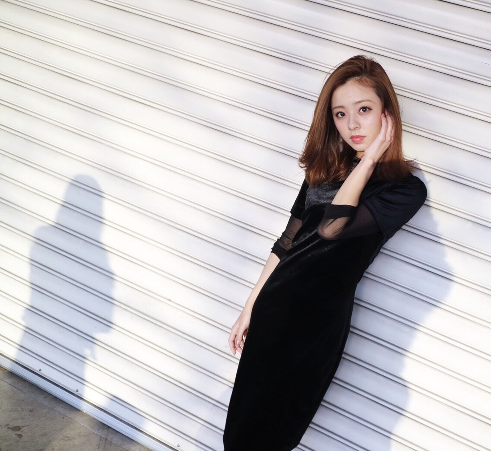

| 2017/01 25 Wed | フクロウを好きになった理由。～2017～3回目 |
こんちわ‼︎
ろってぃーだよ♡

最近モバメはもちろんですが，755をかなりやっています。
わりとenjoyしてるので是非遊びにきてください♡笑
最近はねぇ、フクロウネタで盛り上がってましたよ。
それで「何でフクロウ好きなの？」って理由をblogに書くって約束したので、、
きっかけは親と話してる時に...
私話してる途中に突然時が止まるみたいなんです．笑
目を丸くして口をとがらして静止した時に「お前はフクロウか‼︎ フクロウみたいな顔して‼︎」って言われたのがきっかけです♪♪
その後「フクロウ」っとググってみると，，，思いの外フクロウが可愛すぎました。
そして755にフクロウの写真を載せた所，ファンの方々に「ぇ、これろってぃー？」だとか「ろってぃーフサフサやなあ‼︎」とか「ろってぃー首３６０度まわせるんちゃう？」とか散々言われ、、、
みたいな事が最近のふくろってぃー事情ですねー♪♪
そんな感じで、、
これが先日の握手会で着た私服♡

黒のタイトワンピの下に
黒のシースルーロンTを着てます。
この洋服，体のラインが綺麗に出るのと，生地に光沢があってお気に召してます‼︎
カメラや写真が大好きな私の姉に，この写真を見せると，
姉「んー、微妙やな、、」
私「何が？」
姉「全部真顔やん，微妙」
私「ぃゃ それただの悪口やん 笑」
姉「笑ってる顔の方がぇえよ、真顔なんか...」
私「何が真顔は可愛くないでや‼︎だからそれ悪口やろ」
姉「悪口ちゃう」
ぁ～、 ファンの皆さんは
「可愛いー！かっけー！美人ー！」とか優しーいコメントを沢山くれるのに，家族はいつまでも厳しいものよ♡笑
そんな感じで... これからも仲良くやっていきますね、笑
ぁ、でも21年姉と共にしてきて、まともに喧嘩したことは... 記憶上一回位。笑 仲良いです。
ぁ、こないだ初めてまいちゅんとペアで握手会もあったよ！
来てくれた皆様，ありがとうございました♡‼︎ あの日は雪が降って本当に寒かったですよね？
それでも皆の明るい顔を見れて嬉しかったよ～。
又、きてくださいね♡
ではでは、又更新します( ´ ▽ ` )
コメント(728)
2017/01/25 16:36